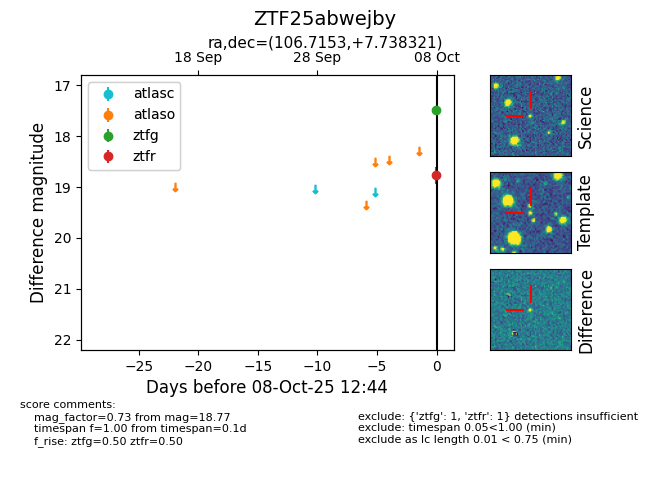

FINK: ZTF25abwejby
Lasair: ZTF25abwejby
ALeRCE: ZTF25abwejby
ZTF25abwejby (ztf,fink)
equatorial (ra, dec) = (106.7153,+7.73832)
galactic (l, b) = (207.7620,+6.93259)

last ztfg=17.48, ztfr=18.77
1 ztfg, 1 ztfr detections